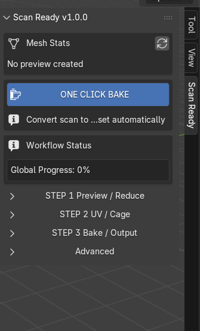
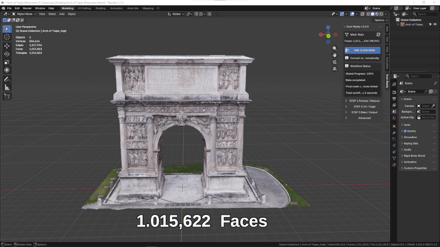

Quick Start
Use this page when you want the fastest path from a heavy high-poly scan to an optimized baked asset.
ScanReady 1.0 is designed to simplify dense 3D scans and make them easier to use in VR, AR, videogames, realtime viewers, and interactive Blender scenes.
Basic Workflow
- Open Blender and enable ScanReady 1.0.
- Select your high-poly scan in the 3D Viewport.
- Open the Sidebar with N.
- Select the Scan Ready tab.
- Click ONE CLICK BAKE.
- Wait for the workflow to complete.
- Inspect the final mesh, material, and saved texture files.

What Happens Automatically

ScanReady 1.0 performs the main production steps for you:
- Creates a lighter lowpoly version of the selected scan.
- Reduces geometry to make the asset easier to manage.
- Generates UVs for the optimized mesh.
- Builds or estimates the baking cage.
- Bakes visual detail from the original scan.
- Creates the final material setup.
- Saves texture files when Save Images is enabled.
The goal is to keep the visual quality of the scan while making the model lighter and more practical for realtime use.
Recommended First Settings
For a first test, keep most defaults and only check:
- Final Faces for the desired mesh density.
- Texture Size for the desired output resolution.
- Bake Base Color if you need the original color texture.
- Bake Normal if you want to preserve surface detail.
- Bake Roughness if the original high-poly material has a roughness texture that should be transferred.
- Bake Occlusion if you want an ambient occlusion map.
- Output Folder if you want textures saved to a specific location.
Quick Result
After the One Click workflow, you should have:
- An optimized mesh.
- UVs on the final object.
- Baked texture information.
- A material using the baked maps.
- Saved image files if output saving is enabled.
This gives you a lighter asset that is easier to move, preview, export, and use in VR or game engines.
When to Use Manual Steps
Use the manual workflow if:
- The preview mesh is too dense.
- The preview mesh is too reduced and loses important shape.
- UVs show stretching or too many islands.
- The cage misses details or covers the scan incorrectly.
- You need Normal, Roughness, or AO maps with specific settings.
- You are processing a large scan that needs safer memory settings.
Manual steps give you more control over the same process used by One Click Bake.